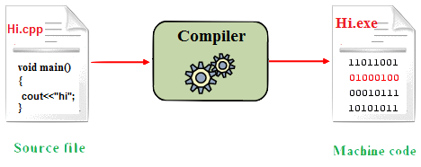
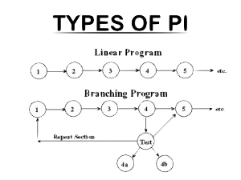
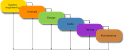
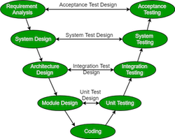
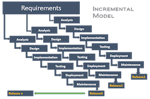
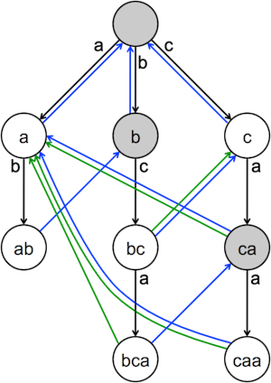

SDLC:
ICS-3U Assignment
WHAT IS THE SDLC?
SDLC or the Software Development Live Cycle is the process where software can be made at its highest quality with the lowest cost, all the while cutting costs. It consists mainly of developing, updating, maintaining and replacing software systems.
This webpage will answer the main questions of the SLDC assignment as well as give a better understanding of what the SLDC encompasses.
Q1: Definitions
- Source Code

The source code is the code written by the programmer using some programming language such as Swift, C, HTML, etc. This code is then translated into machine language/object language so that the computer can read it. The source code contains the function, variable declarations, and more. This can also contain comments so that other clients or developers can easily understand it. It is not uncommon for a project to have more than one source code file such as for HTML, when making a multiple page program there needs to be multiple HTML files. For example with the first assignment of the year the HTML code needed 4 different pages and for each of those pages the code was different. Every single one of these pages count as part of the source code of the program.
- Object Code
The object code is what is produced after an interpreter/compiler translates the source code into machine code which is what computers can understand. It is important to know that computers do NOT complete tasks in the languages that humans use to program them. The languages used by humans are plain english versions of object code (the type of language that machines understand).
- Interpreter
An interpreter is a program that directly executes a programs instructions using a high-level language such as C. It can either transform it into an intermediate language then executes it so it can parse the source code and execute the commands (this way is done line by line so this is why using an interpreter may make it harder to catch errors) There a many advantages and disadvantages to Interpreters and compilers such as interpreters allowing the developer to modify code while it is running. This is why both an interpreter and compiler are used together in most IDE's. A quick summary of how the Interpreter and compiler are different is:
- Interpreter translates program one statement at a time while compiler scans and translates it into machine code all at once
- Less time to translate program but execution is slow while compiler takes much longer to translate but execution is faster
- Interpreters require less memory than compilers
- Interpreters translate the program until an error is met while a compiler gives an error message after scanning the whole program.
The python IDLE therefore uses a INTERPRETED implementation, the main reason why I think this is the case is because the IDLE will run whatever program there is just fine but only return an error when it encounters a line that isn't correct.
- Sequential
A sequential program or sequential programming is when a program runs from one line to the next in a linear fashion with one instruction at a time. There is no code running in parallel to this kind of program(ming). This kind of programming is usually used for simple programs that don't have much going on, BUT for more involved programs such as what we use in FRC command based programming or another kind of programming strategy is used.
- Iteration
Where a set of commands/instructions are repeated a specific number of times usually until a condition is met. For every pass that the program takes through the repeated chunk of code this is a single iteration. As an example, you can have a list of 10 letters where you want to loop over that list and print every letter. For this example we will hypothetically use a for statement that will end when list > 10. In this case everytime the for loop passes (10 times total) it will print the letter in the list, if value of list started at 1, printed the letter in the list, then the value of list became 2 that would mean that one full iteration was competed. Put together, this for loop will have 10 iterations.
- Decision

Put simply, this is when the program makes a decision, usually with if or else statements. For example a decision can be when a if statement checks if a value is greater than a number and if so it will print "the number was greater" but if the number was less than the value it will print "the number was less". This is probably one of the easiest concepts to grasp as it has no fancy terminology and it can be easily applied to every day life such as if I get a level four on assignment THEN make sure I keep it up ELSE study harder!
- Integrated, Unit and Automated testing
As an extra to this question, I chose to explain a concept that I used heavily while designing apps on Swift. Testing and debugging is very important in programming, but it is important to understand the two main types of this. Integrated testing is when multiple modules of a program are put together and stress tested to analyze how they interact between each each other. For example, while developing my calculator app i had 5 different modules: one for storing calculation history, one for updating left and right side of equations, one for keeping the operand stack up to date and more. I already knew they worked fine on their own, but when many different instructions are put together it is important there are no interruptions. Unit testing is the simplified version of integrated testing, it is when you take one module of a program (such as updating the operand stack) and making sure it works perfectly on its own. Finally, what i find the most important part of software development is getting AUTOMATED testing, once my program got to more than 1000 lines it became impossible to make sure all the possible conditions are tested! So automated testing helps to keep track of all conditions then test them out every time a change is made to the code.
Q2: SLDC MODEL
It is important to understand the process by which software is conceptualized developed and maintained. This process is known as software development life cycle or the SDLC there are seven key points to understanding software development lifecycle: phase one planning, phase two requirement analysis, phase three design, phase 4 implementation and coding, phase 5 testing phase 6 deployment, and phase 7 maintenance. As a an example of how this is applied: it all starts with this guy the customer he's the guy that has the business idea for our invoice application and the money to get it started he's going to reach out to multiple different tech companies until he finds one that he likes finally he's going to meet our company's product owner or our project manager they're going to discuss terms of their agreement, sign a deal and accept the project. This will move us into the next phase planning the requirements,together the customer and the product owner will outline the requirements of the application let's imagine that the requirements that they've both agreed upon are as follows: A login page, a registration page and a logout page (keeping it basic for the purpose of the explanation). With this then move to the requirement analysis phase here our team operations developers product owners and testers all meet up in an office for a few hours and define each outlined requirement and give more planning details such as having the user input a username field, password field, terms of service check box, enter button and maybe even a forgot password button. From here it moves on into the design phase of the SDLC, the design phase takes all the requirements and starts to plan the product, this can include things like the GUI, color schemes and more. Next is the implementation and coding phase, where the programmers finally get to have fun coding the product. The designers continue to plan the UI, and testers begin the first steps of the testing (writing test cases). The testers are critical in this stage because while making test cases they can evaluate the usability of the product, and discover design flaws, this is important because it is the cheapest if these potential problems are flushed out ahead of time to stop the need to go back later on and waste hours of time, money and resources. After this is the full on testing phase where coding is just about done, now the testers are executing the test case that they came up with before and make sure there is no big gaping holes of bugs. Using the example from before the testers job could consist of making sure that when the user logs in that his password gets cleared so that it cant be read by anyone or making sure that after logging out of a session all data is cleared to prevent it from being hacked. This stage is very important as if it is not done properly the code may become unusable after release when people find a bug that the testers didnt. Bugs are present in every single program, no matter how much it is bullet proofed, without testing a bug may still be present even if the case of it happening is unlikley, because of how guarenteed bugs are in program solving them is just a bug 😉 of life. Up next is the deployment phase, where the team is nearing the point where production can begin, the developers get the program ready for production such as setting up links, databases, etc. This time for real users and not just use among the team. After the program is finally released so starts the final phase of the process, maintenance. Imaging out Login/logout page is all done, posted and now millions of people are using it: as a company we need to keep it running properly so maintaining the servers, scaling data if the servers get to overloaded, releasing updates to keep up with the times, this all falls under maintenance! You dont want your product to be forgotten right! In addition, like I said before about the importance of testing, sometimes clients will still find bugs and in that case releasing patches/bug fixes will be part of the maintenance phase.
Generally, the steps between the site and the slide show are the same with a few steps being added in the sites vs the slideshow. Some of these differences are the addition of the "marketing" phase and "recruitment" phase. The marketing phase is easy to understand, before a product is made or released, market research must be done to know what people want, not just your employers but also the general public. This also entails selling the product, most software designers can only do the programming part of the process but people like Steve Jobs and Elon Musk are so succesful BECAUSE they can do both the technical and people work. The recruitment phase is when the team members are chosen/employed after figuring out what the client wants. Based on the requirement made by the client, people are hired for their expertise and experience. This is a critical part of the process because if unqualified people are hired the product will never reach shelves or be succesful if the people behind it are incompetent.
The similarities are all generally the same. All of the sites had a planning, design, coding, testing and maintenance phase. This is because these are the bare bones of a software product, without planning it will always be a huge mess, without proper design the team will be indecisive, without coding there will flatout BE NO product, without testing the product will be unusable with all the bugs it has and finally, without maintenance the product will never reach mainstream market and will likely be niche (only be popular for a short amount of time then die out).

- Waterfall
- Linear sequential approach to software design
- Phases must be finished before moving on to the next phase
- Usually used for basic programs with not to many components
- First development model to be introduced
- Used when there are clear requirements (not changing or being added to as it goes)

- V-Model
- Sequentially completed
- Extention of waterfall model
- Testing is in parallel with coding
- Saves time compared to the waterfall model
- Incremental model
- Designed, tested, coded in parallel
- Each release adds function to the previous release
- Used when requirements are clearly defines (no indecisiveness)

- Prototype model
- Buit prototype then get client feedback
- Used when system has alot of interaction with the client
- Requirements are updated after every prototype
- Only exits the design process when the CUSTOMER is happy, this helps to make sure you are doing what the customer wants (meeting needs)
- Ensures collaboration between customer and developer

- RAD model
- Rapid application development model
- Meant to be fast and easy! This is typically used for niche or seasonal products such as drones because there is a time crunch to get the product done and into the hands of the customer
- Components finished in parallel
- For getting quick feedback from customer
Q3: PROBLEM SOLVING
- Top-Down:
When a developer starts with a large program doing a large function then splits it into its sub tasks such as if the big program was meant to calculate price of a product, the sub tasks would be: scan product, get store price, add tax, display prices, etc. The top down approach will make it much easier to divide up the work so that it can be more doable and easier to understand and complete. This doesn't help much for small programs, because of their simplicity there may only be one or two subtasks which doesn't help as much. After all the subtasks are complete they can be put together to create the final product. When using this strategy in a team it is important to have very good communication so that you are on the same page about things like: code size, variable names, memory limitations, etc. This will help when it comes time to merge the subtasks
- Means to an end:
This is a strategy commonly used in AI. This strategy consists of figuring out the solution to a problem by finding a sequence of actions that will eventually lead to the solution. AI usualy does this by building up many associations, environment conditions, past "memory", and general technological ability. Although due to the cognitive load theory, humans using this strategy may be too difficult to do the way AI does it. This strategy is best when there is a clear and defined goal that you already hold the skills to solve, if the solution is unattainable then the sequence of actions you come up with may just be unfeasable or unrealistic.
- Brainstorming:
Brainstorming is when you come up with as many solutions as possible to one problem with no limitation on creativity then picking the one or ones that is the best. This is best used in groups where there are a larger pool of unfiltered ideas instead of just one person because then there may be bias towards one line of thinking. Brainstorming is especially useful because unlike many other strategies, having more people could benefit you more than distract and it requires minimal amount of setup or preparation.
- Previous knowledge/experience:
Previous knowledge is an especially effective strategy for problem solving. This is when a team or individual solves a problem based upon previous problems that are similar to the current one and using the ideas that worked before while eliminating the ideas that failed. This strategy is most useful in groups where the people are experienced in the subject and have done it before. For example, with FRC last year, we used lead-screws to lift/decend the spine of the robot but because we didn't have experience with them before, weight became a problem and the threads began to grind. If we had the experience with lead screws before it would have been ruled out before hand (atleast we learnt something new!).
- Building blocks:
There are many versions of building blocks strategy, one of which being to complete the program one section at a time and adding it to the final product. This can be efficient because it divides up the work efficiently while also simplifying it. This strategy is best applied with a larger team combined with a complex project. For example the Youtube algorithm is VERY complex with head programmers stating that they dont even understand all of it, it is impossible to know if they really did use the building blocks strategy, but if they did im sure it would have been beneficial. With this, it also becomes apparent that there is a large disadvantage with this strategy being that not everyone will know the big picture so in the case of rehiring or outsourcing work it may become hard to keep everyone on the same page.
- The six W's:
The six Ws strategy is a very effective way to ammas information. The asking of these questions is the best way to get started on understanding WHO you are working for/WHO you are making the program for, WHY the program is being made/WHY this program will be used, HOW this program will be made and HOW it can be done efficiently. WHERE they should start making the program and WHERE it will be distributed, WHAT is being made and WHAT are the requirements. Finally, HOW they can go about accomplishing finishing the development. This is mainly used as a base line to set the base limits and requirements which is why it is so effective and fast. But because of this it lacks the sufficient detail to REALLY get the expectation, this strategy should always be used in conjunction with another.
- List of priorities:
This strategy helps after the use of another one because it will help to map out which tasks need to be done first vs which ones can be moved down. This strategy helps to save time and optimize performance. This is especially useful when there are a large number of tasks that need to get done because without a list of priorities it may become overwhelming. Personally this is the best strategy because it is the one I use all the time in everyday life. When it comes to balancing all the homework, extracurriculars, app development and studying it may become hard to keep track of them all and which ones have the closest deadline.
- Round robin:
Sometimes the workload is just TOO MUCH and somethings need lots more time than others, in this case you can extend the workload along a given amount of time (while accounting for buffer time) and alternating the sections of the work every hour/day/week/etc. For example while used in conjunction with the top down strategy you can work on the "scan product" sub task for one day, then switch to the next one and so on. This way all the sections will be getting progress at the same time leaving nothing unfinished.
Keep in mind that it is almost NEVER the case that only one strategy is used! By using two or even 3 strategies you can combine their pros while covering up their cons to create a well oiled machine of productivity. By considering the disadvantages to every strategy you can counteract it by combining it with another one. For example, another time when this can be directly related to school is with the combination of listing priorities, brainstorming, and MEA. In a school setting it is important to keep up with time constraints, keep your options open while also splitting the homework and projects into simpler sections. Listing priorities helps to keep up with time constraints as the list is tailored to optimize time and reduce procrastination, brainstorming will keep your options open such as noting down all the ideas you come up with related to a project which makes doing the project easier as the ideas are already there and finally MEA will help to keep the workload in perspective so that as a student you don't get overwhelmed, this way you use the simpler tasks in the list of priorities to keep things easy to work with.
Q4: ALGORITHM EXAMPLE

Algorithm on how to make a PB&Nutela
- Get two slices of bread
- Open plate cabinet
- Get plate
- Put plate on counter then both slices of bread on the plate
- Open utensil drawer
- Take out butter knife
- Put butter knife next to plate on counter
- Go to cabinet
- Get peanut butter jar and Nutella
- Put jars on the counter next to the plate but not ontop of the knife
- Open both jars
- Put first slice of bread on plate, face up
- Stick the knife in the PB jar and take some out, enough to cover bread but not too much
- Spread PB on the bread that is on the plate using the butter knife
- Clean knife on rim of PB jar
- Stick the knife in the Nutella jar and take some out
- Spread Nutella on other slice of bread
- Put side of other slice of bread onto the slice of bread on the plate so that the sides with the toppings are merged together
- Close both jars with the corresponding lids
- Put away PB jar and Jelly jar in cabinet
- Put butter knife in sink